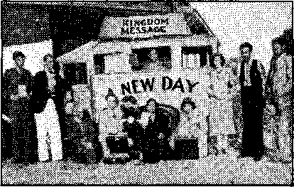

Contents
America Becoming Jesuitized (Part 2)
Deliberately Advocates Conspiracy
The New Government 12
Published every other Wednesday by
THE GOLDEN AGE PUBLISHING COMPANY, INC. 117 Adatna St., Brooklyn, N. T.,.U. S. A.
President Clayton J. Woodworth
Vice. President Nathan H. Knorr
Secretary end Treasurer Charles H. Warner
Five Cents a Copy
fl a year In the United State*
I1.2S to Canada and all other countries
NOTICE TO SUBSCRIBERS
Remittances: For your own safety, remit by postal or express money order. When coin or currency Is lost In the ordinary mails, there Is no redress. Remittance* from countries other than those named below may be made to the Brooklyn office, but only by International postal money order.
Receipt of a new or renewal subscription will be acknowledged only when requested. Notice of Expiration Is sent with the journal one month before subscription expires. Please renew promptly to avoid loss of copies. Send change of address direct to us rather than to the post office. Tour request should reach us at least two weeks before the date of issue with which It is to take effect. Send your old as well as the new address. Copies will not be forwarded by the post office to your new address unless extra postage Is provided by you.
Published also in Afrikaans Bohemian, Danish, Dutch, Finnish. French, German. Greek. Hungarian, Japanese, Norwegian. Polish, Portuguese, Spanish, Swedish, Ukrainian; also special Australian edition in English.
OFFICES FOR OTHER COUNTRIES
England 34 Craven Terrace, London, W. !
Canada 40 Irwin Avenue, Toronto 5. Ontario Australia 7 Beresford Road, Strathfield, N.S.W. South Africa 623 Boston House, Cape Town
Entered as second-class matter at Brooklyn. N. T-, ; under tho Act of March 8, 187S.
A Casual Acquaintance
The man with the suitease chased the train to the end of the platform, but,failed to catch it. As he slowly walked back, mopping his brow, an interested onlooker said:
“Miss the train?”
“Oh, not much,” was the reply. “You sec, I never got to know it very well!”
Could Have Tried, Anyway
“I wish you’d help me with this problem, Dad,” said a small boy struggling with his homework.
“Can’t, Son,” said Dad from behind his paper; “it wouldn’t be right.”
“I don’t suppose it would,” said the boy, “but you might have tried.”
How He Got a Handout
Housewife: You look strong enough to work and earn your living, but still you seem to prefer begging. ■
Tramp: I know, Madam. And you are beautiful enough to go on the stage, but evidently you prefer a simple home life.
Skilled Mechanic
Employer; Are you a thoroughly trained mechanic ?
Applicant: Yes, sir. I’ve had six years’ experience in the Ford works.
Employer: What did you do therel
Applicant: I screwed on nut 369.
In the Emergency
A doctor had an urgent call from a man who said his son had swallowed a fountain pen. “I’ll come at once,” said the doctor. “What are you doing in the meantime?” “Using a pencil,” was the answer.
Gift* in Seuon
Little Ikey: Fader, can I haf a penny for ice-cream 1 I’m so hot.
Father: Dot vould be a vaste of monny, my poy. I’ll tell you a ghost story. Dot vill make your blood run cold.
Cheered the Judge .
“You’re home early from the court, Mrs.
Murphy.”
“They shoved me out for clappin’ when me ’usband got three months.”
■ —Sydney Bulletin.
CONSOLATION
“And in His name shall the nations hope.”—Matthew 12:21, A.R.V.
Volume XX
Brooklyn, N, Y., Wednesday, April 5, 1939
Number MO
Priest Coughlin, of Royal Oak, Michigan, is stirring up anti-Semitism in the United States. He asserted that the Russian Revolution was financed by American Jewish bankers, and that the United States Secret Service had documents proving his statements to be true. This was denied by responsible heads of the Secret Service, as well as by Kerensky and Trotsky. Coughlin’s followers picketed radio stations refusing Coughlin’s talks because of his attack on the Jews, The New York Post printed, in parallel columns, extracts from Coughlin’s talks and those of Goebbels, Jesuit-trained and actor-pummeled propaganda minister of Nazidom, showing striking similarities. At the Nazi GermanAmerican Bund meeting held at Madison Square Garden, New York, February 20, the mention of Coughlin’s name was followed by “the greatest ovation of the night”. Cardinal Mundelein, archbishop of Chicago, issued a statement that Coughlin is not a spokesman of the Catholic Church. One is prompted to inquire when a priest is or is not a spokesman of the Catholic Church. Something’s wrong. Surely after twenty-three years of education a priest ought to know something about the views of the totalitarian church which he represents.
A Catholic, writing to the Cleveland News, wonders why the Hierarchy in America puts up with Coughlin’s unpriestly activities. It has the power to put a stop to them, instead of merely saying they do not represent the church. Is the Hierarchy waiting to see which way the wind blows?
Joseph Bono, of Brooklyn, N. Y., was given six months in prison for pasting'up offensive anti-Jewish stickers. He claimed he did it for Walter Ogden of the so-called “Christian front”. “Reverend Father” Ogden says that the man who gets the six months in jail told APRIL B, 1989 a lie. Somebody lied, no doubt. Anti-Semitism is a feature of Jesuit-Fascism.
Just after McNamara, one of his stooges, threatened to shoot to kill if Jehovah’s witnesses listened to a Bible discourse broadcast from London, the pope told the people of New Orleans that “the Catholic is necessarily the champion of true human liberties”. The idea back of this is that no one else than a Catholic should have any liberties at all. The liberties of others are not true, and they are not human. It is all so simple, and so like the Devil.
One-sided freedom of speech is not the American idea. In this connection the Portland Oregonian said:
There is no such thing as establishment of liberty of speech for one school of thought and not for others. Onee the principle is established that the mouths of your enemies may be stopped, that also establishes the principle that your mouth may be stopped. It is written into the constitution of this nation that liberty exists—that peaceful assembly is permissible. That provision must be defended to the death. Here in Portland there was a case in point Sunday night when a priest in official garb brought about a near-riot in the public auditorium by his heckling of a rally for loyalist Spain. He did force the adjournment of the meeting. And yet this same priest and his sympathizers well know that if their side in the controversy were to hold a peaceful meeting which the other side tried to break up, the intruders would be beaten or the police called in.
Egged on by a priest, 150 anarchists of the Roman variety attacked an itinerant preacher at Ypsilanti, Michigan, chased men and women out of his tent, caused the injury of several women, tore down and burned the tent and had the police escort the preacher out of town. Nobody was arrested, of course.
Despite the fact that the police were notified a day in advance that a riot would be
staged in front of a 5- and JO-cent store, they did not arrive at the scene until every window had been smashed, causing damage estimated at $500. Nobody was arrested. What was back of this?
Of the crooks that cleaned out the city of Waterbury, Connecticut, 88.8 percent were Roman Catholics; 24 out of 27. Presumably they had the right kind of education.
The state within a state, the Jes-uit-Hierarchy, received one more upward thrust at Philadelphia when that city had its first “Judges and Lawyers’ Mass”, known as a “Red
Mass”.
At a Red Mass at Washington, D. C., Archbishop John T. McNicholas condemned “atheistic totalitarian governments”. Members of the Cabinet, Supreme Court and Congress attended this Roman Catholic ceremony. NonCatholic judges and lawyers frequently attend these masses, which are said to have been introduced at the request of judges in France who sought “spiritual light”. The kind of spiritual light the judges get is indicated in the outrageous treatment accorded Jehovah’s witnesses by Catholic judges who circumvent the plain intent of the law to interfere with these humble servants of Almighty God. ‘
Just before his election as governor of California Culbert L. Olson took his hat in hand and called on Archbishop Cantwell, who received him graciously. An organization called “Constitutional Democracy of California, Inc.,” circulated a folder calling attention to this fact, and the further fact that “Senator Olson’s labor platform conforms with Encyclicals of Leo XIII and Pius XI”. It also mentioned, just incidentally, of course, that'Olson’s eldest son married a “fine Catholic girl and their children are being reared according to the usual Church contract” which requires that they be raised Catholics.
Those who wish to believe that the pope (and the Hierarchy, and the Jesuits) is riot in politics are puzzled to note instances like the foregoing and the case of Simon W. Gerson, assistant to the president of Manhattan Borough, whom the Roman Catholic organizations of New York city and Brooklyn sought to have removed, claiming he is a Communist.
It is of interest here to note the following, 4
by Drew Pearson and Robert S. Allen, in the Philadelphia Record:
There is one diplomat whom Roosevelt will not oust from the service, no matter how ardently the State Department may wish it. He is Antonio C. Gonzales, American minister to Ecuador, who has been kicked all around. Gonzales is an American citizen only by the accident that his Cuban parents were in the United States when he was born. Completely Latin by blood and temperament, he refers to Latin Americans, with whom he is supposed to promote good neighborliness, in a slighting manner. Partly because of that, the State Department transferred him from Panama to more distant Ecuador, hoping he would be eased out of the service. But the White House has decreed that Gonzales must have another post. Inside reason: Gonzales was appointed with the approval of Patrick Cardinal Hayes, of New York.
At San Juan, Puerto Rico, U. S. troops from the Sixty-fifth Infantry were ordered out as a “guard of honor” to an outdoor mass on El Mono Field. It would be interesting to know why U. S. troops (many of whom are not Catholic) should be ordered out for any such occasion. ,
The “Reverend Father” William R. Arnold is chief of chaplains of the United States Army, the first Roman Catholic to occupy that position.
Every honor that a president of the United States could bestow upon a religionist, whether constitutionally or otherwise, was shown Cardinal Mundelein on the occasion of his visit to Rome sometime before the death of Pius XI. These honors were well understood, both here, and in Europe, to have political significance. They constituted a studied effort to “build up” the cardinal as a representative of the Roman Catholic American Hierarchy.1
Some prominent Catholic busi-v^gg^Sijness leaders are Samuel T. Bledsoe, president of the Santa Jfe Railroad Svstem: James A. Farrell, presi-^CS“3®dent of the United States Steel Corporation ; William M. Barrett, president of the Adams Express Company; Cornelius F. Kelley, president of the Anaconda Copper Company; the late Clarence H. Mackay, president of the Postal Telegraph Cable Company ; and Charles M. Schwab, chairman of the board of the Bethlehem Steel Corporation.
In the undeclared labor war of 1937 about 7,000 men were mobilized as guards, patrolmen, deputy sheriffs, policemen and militia, and were armed with munitions costing $141,000, most of it paid for by the steel companies. The war cost the taxpayers of the cities and counties where it was carried on $190,000, but it cost the steel companies in two states alone $4,144,000. Part of the ammunition of the Youngstown Sheet and Tube Company consisted of eight machine guns, 452 revolvers, 314 pistols and 190 shotguns. Also, they had $10,000 worth of tear gas.
America’s horrid finish
The American Guardian of March 11, 1938, reports that the Senate Civil Liberties Committee revealed that big business has a high command of 207 firms which lead in unionfighting activities, industrial espionage, purchase of tear gas, and contributions to every Fascist enemy of civil liberties in the United States. They purchase 60 percent of the tear gas and are the largest users of spy services. The list of names is that of the largest business concerns in the country. The total of salaries of such of their officers receiving more than $50,000 a year mounts up to $88,754,009.
The advantages of feeding and voting the people (now at its apex in the New Deal racket in the billions—America’s finish) was well understood by the former Tammany regime of New York city, whose fame spread to the ends of the earth, as is indicated by the following from the Manchester Guardian of September 9, 1938;
No one knows exactly how much Tammany Hall cost New York when it was in control. A rough idea may be gained from the fact that when Tammany was in power it cost about twice as much per capita to govern New York as was spent in London, a city nearly identical in size. This comparison should be adjusted because of differences in the cost of living in the two countries, and there may have been some slight difference in the service rendered in the two municipalities. There are few careful observers, however, who do not believe that Tammany Hall and its allied machines in other parts of New York city stole or wasted from £40,000,000 to £60,000,000 annually.
A steamship company might pay for the privilege of using some of the. city-owned docks; the builder of a skyscraper would find that he could not get bis plans approved or his building erected until he had paid £1,000 or £5,000 to “a friend” of the inspector. Those who sold supplies to the city took it for granted that their hills should be increased by ]0 or 15 percent, the difference being returned in cash to the officials who acted as purchasing agents.
New York has a. large population of Catholies, particularly those of Irish or Italian racial stock, and the Church and Tammany have always been closely parallel in purpose, The Catholic Church in the United States is today more politically conscious than it has ever been; the United States has never had a Catholic party, but may be on the eve of such a development. As long as Tainmany exists at all there is always the possibility that it may return to power. Few believe, however, that.it would ever go back to the old days of wholesale bribery and extortion, when the city’s streets were filthy because no one bothered to keep them clean, when the death-rate was high because to keep it down was too much trouble.
At this point, Dr. Charles Fleischer’s remarks in the Detroit Times of April 24, 1938, are apropos. He said ;
In America, the old army game as practiced by Tammany was “Feed ’em and vote ’em!” And now look at Tammany—the leader as demoralized as the led—and the fed! Under present conditions in Washington, Tammany is out-Tammany-ized. Tammany fed and. voted relatively few. Washington feeds—and hopes to vote—millions! The easiest way—and the'most disastrous!
APRIL 5, 1939
In view of the extreme pressure exercised by various departments of the Government, it is really remarkable that there is still so much of liberty in the United States. It is well known that in many parts of the country WPA workers have been given to understand that in order to keep their jobs they must vote for the party in power.
The Brookings Institution estimates that there are 250 Government press agents in Washington, with yearly salaries totaling $717,000. They are called by all kinds of peculiar names, administrative assistants, secretaries, statistical experts, etc., and one is listed as a motorcycle messenger. In three months in the campaign year of 1936 these industrious persons sent out 4,700 news releases. They wanted to keep their jobs and so were trying to sell the present Government to the people.
In confidential instructions to field workers the WPA administration, not satisfied with, the foregoing publicity, advised the selection and use of at least one capable, experienced newspaperman of extensive managerial experience, whose business it should be and is to meet editors and reporters and get them to publish the correct Government slant to the news. .
The same confidential instructions boosted speakers, before assemblies and over the radio. During the campaign of 1936 the WPA programs were used on 500 stations. One WPA official frankly admitted,
The objective here, as with our movies, is to sell the WPA spending program as a sound, economic investment.
In other words, the gentleman in question wished to eat regularly, and it looked to him as if he would be more certain of that happy way of spending his time if he did all possible to keep his job. .
P*” Hitherto the strength of America jflfe has been in the great numbers in OR its so-called middle classes, and their evident prosperity. These classes are shrinking in numbers and in financial strength. The proof of this is furnished by students of the stock brokerage business in New York who have come to the conclusion that there is no other reasonable explanation of the changes that took place in the New York stock market in 1937 than that there are great numbers of persona, once active and interested buyers of stocks, who no longer have either the money or the disposition to buy stocks.
With 11,344,239 unemployed the United States has seven times as many unemployed as Britain, and thirty times as many as France. Unemployment increased in 11 out of 23 major countries in the three months ending October 1, 1938, as compared with the same period in 1937. '
Where the Hierarchy through its agents and sympathizers has a strong hold upon the political regime conditions approximate those. existing in Jersey City, strongly Roman Cath-: olic. Says C. V. R. Thompson in the London Daily Express:
The dead of Jersey City are politically active years after they are buried, and, funnily enough, they always vote for Hague. With efficient wardheelers, with rewards of well-paid sinecures for loyal helpers, with secret reports from his spies on the activities of every opponent, Frank Hague has power to spare. In one ward in a recent election the result of the poll was: For Hague, 2,350; against Hague, 1.
To pay for this political machinery Hague has to tax the poor people of Jersey City. It costs four times more to run Jersey City than boss-ridden Kansas City, a town four times its size.
The Nation of January 21, 1939, contains the following, which shows how the Jesuit-Hierarchy influence in America is making itself felt on behalf of Fascism in Spain:
The combination of duplicity and inertia that has led the democratic powers to lend at least passive aid to the destruction of democracy in Spain is one of the most shameful crimes of the shameful age in which we live. The American people cannot afford to be partners any longer in the tragic farce of “non-intervention”, and the Administration must summon up all its courage and propose repeal of the embargo or confess that the brave words of the president’s message to Congress ring untrue on the habd counter of deed' and fact. It is no secret that the only real obstacle to repeal of the embargo is Catholic pressure. The leadership of the church is deliberately attempting to nullify the expressed pro-Loyalist sentiment of a majority of the American people. Few campaigns in recent years have been as hysterical or as bitter as that now being conducted to prevent the lifting of the embargo. Many leading Catholic papers are devoting their entire issues almost exclusively to the Spanish question, and despite the plain fact, revealed by the Gallup and other polls, that most Americans favor the republic, the Catholic press has the effrontery to declare that the movement
Against the embargo is Communist-inspired and to attempt to stigmatise all the leaders of the proLoyalist movement as “red".
The Boman Hierarchy keeps a list of books which its adherents may not read, or may read only by special permission. That, however, does not serve the purposes of the worldwide “educational” program they are conducting. Hence a move is now made to take over the book trade. The ostensible object is to save the youth from reading obscene books. On the surface it seems fair, but in view of the disclosures of the conditions in the monasteries in Germany (and lately in the Netherlands) it would seem preferable to let youth do its own selecting, with the counsel of their parents. Here it is of interest to note that the Jesuits frown upon sex education, desiring to keep the consideration of such subjects under their own control by means of the confessional.
The Hierarchy describe Judge Rutherford’s book Enemies as obscene because it applies to religion the Scriptural stigma of adultery and harlotry. They would like to stop the circulation of Judge Rutherford’s books altogether.
-□6^— In his address to the Catechetical Congress of the Confraternity of |UL|4h Christian Doctrine of the Roman Catholic Hierarchy, held at Hart-MHSB ford, Connecticut, in 1938, the “Most Reverend Father” Thomas T. Toolen, bishop of Mobile, Alabama, explained:
We eonld make America Catholic if Catholics had the zeal of the followers of Rutherford.
Judge Rutherford’s books have' attained a circulation of more than 275,000,000 copies. Selec| any page at random and you will usually find several Scripture citations or quotations, and often many. The New York Bible Society report shows that in the 128 years of their existence they have put out 22,220,704 Bibles, testaments and Bible excerpts, or about 8 percent of the output, for only 20 years, of the Society of which Judge Rutherford is the president. Anybody should be able to see the hand of God in such figures.
Meanwhile, proponents of religion, recognizing the justice of the charges laid against the hypocritical practice, fear the presentation of the Truth, which, as Jesus stated, can never harm one who does what is right. Here the following from The Daily Hawk-Eye Gazette APRIL », 1M»
(Burlington, Iowa) of March 22, 1938, is of interest; .
The Reverend Richard Felix, of the Benedictine order from Pilot Grove, Mo., told over 300 members of the Knights of Columbus at a dinner at St. John’s auditorium last evening that if the antiChristian propaganda, especially virulent against the Catholic religion, being circulated in America and other lands by the organization known as “Jehovah’s witnesses” led by a Judge Rutherford, is not combatted to the limit, suppression of religion, as now witnessed in Russia, Germany and Mexico, may happen here.
The free publication of news by any means could hardly go unchal-UB V lenged by the Jesuit - Hierarchy system. Hence the radio must be asa watched.
Mr. Sheehy, the same Mr. Sheehy that is the “Reverend Doctor Father” Maurice S. Sheehy, of the Catholic University’s department of religion, knows who is running the United States, or who think they are running it. It’s Sheehy and his friends. Referring to a decayed exhibition of Adam and Eve given over the National Broadcasting Company by Don Amec he and Mae West he threatened that if the Federal Communications Commission did not investigate “we shall shortly have a new lot of commissioners”.
In a lengthy letter to the National Broadcasting Company the Federal Communications Commission scolds away for several pages (and properly enough, too) at that institution for permitting the salacious broadcast by Mae West and Don Ameche burlesquing Adam and Eve. The Commission tells the Broadcasting Company that this slap on the wrist is all the punishment they shall receive, but that it has it in for 59 stations that carried the program because they did not conduct their stations “in the public interest”. But the Commission itself does not conduct its own work “in the public interest”. It received a petition of 2,600,000 signers who wanted to hear a debate over the radio between Judge Rutherford and the Roman Catholic Hierarchy, and it was so afraid of the Bible truth, and so apprehensive as to the fate of its "brass check”, that it did not dare to so much as cheep. What grounds has a coward for accusing another of moral breakdown?
The Roman Hierarchy greatly fears the enlightening effect of the radio. It is in favor
of restrictive rules, but realizes the necessity of cloaking its aims with plausible arguments of “guarding the public interest”. It applauds sentiments like those expressed by the chairman of the Federal Communications Commission, who said:
Should there ever be an attempt here by anyone to so debase radio as to use it as an instrument of racial or religious persecution, the Communications Commission would employ every resource it has to prevent any such shocking offense. President Roosevelt would, of course, support us to the limit in such a stand. He has consistently sought the safeguarding of radio as an instrument of democracy, never to be used to injure any racial, religious or other group.
Those who had the privilege of hearing Judge Rutherford’s courageous, truthful and powerful address from London on the widely advertised lecture “Face the Facts” will sec at once the terror of the Roman Catholic Hierarchy in the way in which it put the matter before the public through its press. The language of Judge Rutherford’s address was entirely Scriptural, but the Hierarchy said, “Rutherford’s Address at London Hits New Low in Billingsgate Filth.” This vicious misrepresentation of a Scriptural address reveals the Hierarchy’s attitude toward Scriptural truth.
In its issue of September 16, 1938, 77te Catholic Columbian, Columbus, Ohio, deliberately advocates conspiracy against the radio stations WB NS and WJR for carrying the lectures of Judge Rutherford from. London, and tells how to boycott advertisers and to make illegal threats. The Columbian has no fears of violating the laws of the United States, or the laws of Ohio, or even the laws of common decency. To all these laws it is entirely immune.
Because they feared that the truth would he told about their ungodly racket, and the nickels and dimes would stop coming in, “Reverend Father” Gabriel Gorman, C.P., of St. Gabriel’s monastery, Boston, Mass., and his priests, on the morning of October 2, 1938, told all congregations to call up WORL and urge that Judge Rutherford be cut off the air. This conspiracy, illegal, un-American, cowardly, and typically Vaticanish, was carried out to the letter, and as soon as the complaints began to come in from the people who do not use their own brains the manager of WORL concluded not to use his either and the discourse “Fascism or Freedom: Which Shall We Have?” one of the most important addresses ever given, was cut off.
The information comes in a National Catholic dispatch from Columbus, Ohio, appearing in the Catholic press and stating in so many words the decision: “Clergymen asked to pass on talks of Rutherford.” ’ What the clergymen will say could be written for them beforehand. It is like asking the Jewish high priest and his fellow hypocrites what they would do with Jesus.
The claim is made that the Catholic press in the United States has a circulation of nearly nine million, that there are 4,631 Catholic publications, and that among these are 121 weekly newspapers. This is a greatly exaggerated estimate of the extent and influence of the Roman Catholic press. Intelligent Catholics are not particularly interested in the censored news and articles carried in these sectarian publications. Many of these “Catholic publications” are church papers of local interest and are read by but few, while others are advertising sheets, containing pleas for money for this or that religious racket. After a while the milking process becomes monotonous. The Hierarchy often bemoans the fact that so few Catholics read their papers. '
While the Hierarchy has a press and press service of its own in America, that does not stop them from trying to influence, control or censor papers read by others than Catholics, as is evident from the foregoing items and the examples that fallow.
Westbrook Pegler, honest Catholic, regarded by many as America’s ablest columnist, had the courage to stand by the legitimate government of Spain, This was too much fdr the Cleveland Press, which was aware of the Jesuit-Ilierarchy attitude on the subject. So Pegler’s column was omitted that day with the explanation, “Due to transmission delay there will be no column today.” Afterwards it was disclosed that the “transmission delay*’ was at the desk of the editor!
Numerous magazines have carried articles about the pope and the Vatican which to all intents and purposes were written from the Catholic viewpoint, and were
highly favorable to the Hierarchy and its claims. An example' is the article on .“The Vatican” that appeared in Life, December 26, 1938. One wonders how many Protestants wrote Life in protest against this kind of propaganda, referring to the thing the pope sits on as the “Throne of St. Peter”, and which says, “The man who now occupies the awesome chair of St. Peter was, until 1918, a scholar of limited ecclesiastical fame.” The article should have been marked “For Catholics Only”, or “Advertisement”. It certainly was not news or information presented in an impartial way.
The Pathfinder, which has not hesitated to print slurring remarks about Judge Rutherford and the work of Jehovah’s witnesses, is giving space to outright Catholic propaganda disguised as news, setting forth as fact the peculiar tenets of Catholicism. Here is a sample:
At 81, Pius is old and sick and tired. His mind, however, is as lucid as ever, his reasoning as subtle, and his courage as bold as on the day when he tackled Monte Rosa’s icy flanks. Against the military plight of Hitler’s Germany he has pitted the spiritual might of the Papacy, which traces its authority back through 260 Popes to St, Peter. In an increasingly materialistic world, Pius XI reminds mankind that dictators have died and their kingdoms crumbled, while the Roman Catholic Church, 20 centuries old, still thrives.
Another magazine that has been subjected to censorship and control is Ken, which started out bravely enough to be a news magazine, but soon pulled in its horns.
Unfortunately too many Catholics still place implicit confidence in their religious leaders, and take such statements as the foregoing seriously, viewing those who would be their benefactors as their worst enemies, and failing to recognize who are their enemies. Few Cathglics read the Bible, though permitted to do so, and even encouraged by certain of their own co-religionists.
The John Murphy Company, Catholic publishers, Baltimore, Maryland, offers for sale 27 editions of the Douay Bible, ranging in price from $1.50 to $18.00. These Bibles are “Endorsed by Cardinals O’Connell, Hayes, Dougherty and Mundelein” and advertised in a folder entitled “Why Catholics Should Read the Bible”. Some of the statements in the circular are as follows: '
The Church takes her teaching from the JBible and from Tradition, but primarily from the Bible.
APRIL 0, 1939
. , . If Catholics are to have the true spirit of their religion, and the true Christian spirit altogether, and if they are to impart the same to their children, they cannot dispense with the reading of the Bible, but must make it a part' and parcel of their daily Christian life according to the rule of the Church and the request of the Bishops of this, country in particular. . . . Don’t understand the Bible! Who does f Neither priest, bishop, nor Pope, for all that matter.
The foregoing and many like words which appear in the circular are extremely interesting when compared with a memorial to the pope by the Roman Catholic bishops of Bologna, Italy, in the year 1553, in which they wanted the Bible suppressed, saying:
It is the one book beyond all others that has raised the storms and tempests in which we are almost driven to destruction. For whoever shall diligently weigh the Scripture, and then consider all the'things that are usually done in our churches, will find there is great difference betwixt them, and that this doctrine of ours is very unlike, and in many things quite repugnant to it. . . . Therefore, those Papers are to be stifled.
Apparently the testimony of Jehovah’s witnesses is likewise to be stifled. In the Year Book of Jehovah’s witnesses (published by the Watch Tower, Brooklyn, N.Y., 50e) there is an extensive account of the Jesuit-
Hierarchy efforts in that direction. An excerpt follows: '
The influence of the Hierarchy is further shown in what came to pass at New Orleans about this time. Because of the threats and of the .cutting of the telephone wires by police officers at the instance of the Catholic organization in that city, Jehovah’s witnesses filed a petition in the Federal Court for an injunction, that they might assemble peaceably and hear the message of truth on October 2. The judge of that court, doubtless acting under the counsel of representatives of the Hierarchy, called before him the police officers, Catholic newspaper editors and others who were made defendants, and obtained from them a promise that they would not interfere with the meetings on October 2, and, upon such promise being made, the court continued the case until the 7th of October. At the hearing of that case on October 7, although numerous witnesses testified to the threats made by police and to the fact that the police cut the telephone wires and prevented the speech from being heard from London and, with their hands on their guns, threatened to shoot to kill anyone who interfered, the Judge of the court, after hearing all this evidence, called to the witness stand one McNamara, the policeman who commanded the
police squad, and McNamara testified under oath that he made no threats whatsoever. Of course, he perjured himself, and upon the strength of that perjured testimony the court dismissed the injunction proceedings, further showing the combined efforts of the political, commercial, judicial and religious elements to prevent the people from learning of God’s kingdom under Christ. Immediately following this action in New Orleans Catholic officials in a near-by town arrested Jehovah’s witnesses, who were distributing the Kingdom message in printed form, and charged Jehovah’s witnesses with distributing Fascist literature; and, without any proof whatsoever supporting the charge, Jehovah’s witnesses thus charged were convicted and sentenced to 90 days’ imprisonment and to the payment of a fine of $100 each.
—Page 40.
Jesuitism had its start in the thirteen original colonies when Cecil Calvert, son of Lord Baltimore, in his first expedition to America, sent along two Jesuit priests. He was a Roman Catholic, but the subject of a Protestant king, hence realized that he could not unduly favor Catholicism in his settlement, although he meant the Maryland colony to be an asylum. and nursery for Catholicism in America. He “separated church and state” and instructed his colonists to show toleration to all religions of a “Christian” kind. Roman Catholics claim that this was the beginning of religious liberty in America. Catholic practices and doctrines contradict the implications of this claim.
The Jesuit order in Maryland was the chief instrument of the Roman Catholic church. They reared a considerable number of Jesuit priests, who were influential in organizing the Catholic church in the United States, where there are today over 6,000 Jesuits. America is on the way to being thoroughly “Jesuitized”, that is, brought under Roman Catholic domination by Jesuit intrigue.
Well has The Nation said, in its issue of June 4, 1938:
Nothing on the American horizon—not Southern reaction nor the reign of terror among share-croppers nor the tyrant corporations nor the cold suppressions of a Hague—is as dangerous for the next decade of our life as the organized propaganda of the Catholic hierarchy. We say the hierarchy, because we cannot believe that the workers and tradesmen that make up the rank and file of Catholics in America are represented by the Father Currans and the Father Coughlins and the Cardinal Hayeses that presume to speak for them. We shall have more to say in future issues about the way in which anti-labor, anti-progressive, antidemocratic hysterias are being stirred through the speeches and writings of members of the hierarchy. Here we want only to point out the connection between the Fascist threat and the activity of this largest single minority gropp in the country.
THE Shelby Promoter, of Shelby, Mont., blew off in its issue of January 26 last with a brief item promoting false representations concerning Kingdom publishers. The item follows:
AT IT AGAIN
Another batch of literature was distributed in town over Sunday by the group of religious fanatics who stirred up so much commotion here last summer, when their activities resulted in one of the group being rather roughly handled by Father McGuire. The literature distributed took occasion to denounce local officials for failure to prosecute the “case”. It is probable that no action was taken because of the practically universal approval by local people of die rather summary methods used by die local prelate. The group made only a brief stay on this last visit.
Dale Norris saw this and was thereby prompted to make a few remarks to the editor. Here they are: t
Great Falls, Montana Jan. 28, 1939
Editor Shelby Promoter
Sir, .
Just noted your brief item in the Shelby Promoter of Thursday, January 26, regarding the distribution of the “Nazi Tactics” leaflet by Jehovah’s witnesses on the previous Sunday.
If there were not such a serious issue involved, it would |>e amusing to see your feeble attempt to explain away Shelby’s officials’ openly supporting Nazi tactics. You seem to think no “case” is justified when a local priest (who is supposed to be an ordinary citizen) sets upon and beats up one.of Jehovah’s witnesses who is quietly engaged in his God-given duty of preaching the gospel of God’s kingdom- Then while a local “law enforcement” official uselessly stands by, the local prelate threatens the Christian man and his wife with mob and tar and feathers. In face of this indisputable fact, how can your “news” item say these ‘religious fanatics stirred up so much commotion here last summer’ 1
If the activities of Jehovah’s witnesses constitute such a menace to the community, why do not the strict Federal laws immediately stop such work J (Incidentally, for your information, the Supreme Court upheld this work in the Lovell vs. Griffin, Ga., case last October.) When did Shelby, Montana, become superior to the United States Supreme Court?
Would you add to Shelby’s disgrace of last summer by openly condoning the brutal action of priest Maguire as you seem to want to do in your colored “news” item? How sure are you that the people of Shelby really ‘universally approve of the rather summary methods’ used by Maguire!
It seems unbelievable that you are not aware of the international educational work of the Watch Tower Society and its president, Judge Rutherford, ' who is undeniably the most widely read living author. To save you the embarrassment of making such a blunder again as calling Jehovah’s witnesses “religious fanatics”, I’m sending you, under separate cover, a copy of Judge Rutherford’s speech "Face the Facts , which was broadcast recently from London to more than 50 packed auditoriums throughout the world and broadcast over 118 U. S. radio stations. Any further allusion to Jehovah’s witnesses as “religious fanatics” will have to indicate willing ignorance on your part.
Your studied effort to discredit the “Nazi Tactics” document is all the more laughable when you fail to even try to disprove a single statement there published. Don’t you credit your readers (most of whom have read “Nazi Tactics”) with having enough sense to note this? It would seem that the least you could do would he to publish a truthful news story regarding the same. Or would you wish to fall to the level of the London Catholic Herald, which paper brazenly lied about Judge Rutherford’s world broadcast, was then sued for $100,000 damages, and then hastily made a front-page apology, paying all costs and fees?
Your action on this matter doesn’t indicate that you' have the courage to publish this letter or a copy of “Nazi Tactics”. Bui suit yourself, remembering the admonition that ‘if this work be of men, it will come to nought: bnt if it be of God, ye cannot overthrow it; lest haply ye be found even to fight against God*. (Acts 5: 38,39)
Sincerely,
Dale Norms
So it appears that the Shelby Promoter promotes the works of the Devil. So be it. Every one to his own taste, and “he which is filthy, let him be filthy still”.-—Revelation 22:11.
Mr. Norris, in his letter to the pair of pants that thinks he is an editor, mentions the dis-
tribution of a leaflet styled “Nazi Tactics”, and, as the contents of that leaflet are of public interest, convenience and necessity, the same is herewith published in full:
AUTOCRATIC RULERS who preside over the destinies of the totalitarian states glory in the destruction of liberty. Mussolini boasted that he ha,d reduced democracy and liberalism to the state of “rotten corpses”. Hitler doesn’t need to boast. His atrocious acts of violence and oppression have shocked the world. In America people of all kinds have expressed their horror and disgust. Liberty-loying people have expressed their hope that America will not follow in the footsteps of the tyrants of central Europe.
It is well that all who believe in freedom should be oh guard. The United States is not entirely free from Nazi and Fascist tactics. There is a well-organized movement to destroy the civic liberties of the people, which has made some progress. In the past three years more than two thousand Godfearing people have been subjected to arrest and imprisonment in this land of liberty. For what? Not for commission of crime or violation of law. Purely and solely because they have brought to people that which is better than silver or gold, to wit, the knowledge of the purposes of Almighty God. In addition to a chain of unlawful arrests there have been many vicious assaults resulting in personal injury and destruction of property. For the benefit of all people, evidence is here presented of a few of such overt acts of subversive elements destroying fundamental rights of all people.
Prleitiy inquisition Established
Jehovah’s witnesses have for .many years visited the people to bring them information and enlightenment on the Word of God. Without any profit to themselves, and at the expense of much time, energy and money, they have gone from door to door conveying a message of comfort and hope to those who desire it.
Their purpose in so doing is to serve Almighty God by obeying His commandments to preach the gospel from place to place and house to house. Their work constitutes the worship of God in the mode prescribed by His Word, the Bible,
Many good people of the Catholic and Protestant denominations approve of the gospel message, and are glad to have Jehovah’s witnesses bring it to them. The priests, clergy and other politicians of their flock do not approve. They become greatly incensed because the people are given opportunity to know the truth. The reason is that the truth exposes their racket. It shows how the people are deceived by the priests and clergy, and how their religious organizations will be destroyed at the hands of Almighty God in His battle at Armageddon, now close at hand. Therefore these reli-(Continued on page 18)
As to the Burning of Books
BwwnniwRa I READ with much regret and sur-1 Prise the account of the burning of
I LssLJ | the books of Judge Rutherford at Cedar Hill, which appeared in The
•™™™ Herald-News last week, and while I am not able to accept some of Judge Rutherford’s doctrines, I think every man is entitled to his opinion have divided mankind in all ages and about which no sane man has ever claimed absolute knowledge.
The makers of the Constitution of the United States, disgusted with religious intolerance, incorporated in that great document these words: “No religious test shall ever be required as a. qualification to any, office or public trust under the United States.”
about -questions which
Jehovah’s Kingdom publishers, Spanish-speaking, in convention at San Antonio, Texas
This was in 1787, and in 1791 an amendment to the Constitution was adopted, reading as follows; “Congress shall make no law respecting an establishment of religion or prohibiting the free exercise thereof, or abridging the freedom of speech or the right of the people peaceably to assemble, and to petition the government for a redress of grievances.”
Now. Judge Rutherford seems to be a devoted believer in the Bible and seems.to have led a good life, and .the-only charge: that eqn be brought against him- is : that he 'floes not fully agree with some of us in- his interpret®-, lion of the Bible.. . /
In fact it-is hard , to find two people, who fully agree about it, even in the .same eijuhth, and a spirit of intolerance'toward those who do not agree with us is in -direct eofiflTfcfiwVrtfi the life and teachings of Christ.
The main cause of the crucifixion of Christ was the fact that He broke off from the teachings of the long-whiskered scribes and Pharisees ; He called them a set of hypocrites, He poked fun at their long prayers offered in public places that they might be seen of men, and said unless your righteousness is greater than that of the scribes and Pharisees, you can in no wise enter into the kingdom of heaven.
We are justified in assuming that Jesus meant to say that these hypocrites, who brought about His death because He taught true righteousness, had about as much chance as a winesap apple in an orphan asylum, or a watermelon at a Negro picnic, and if you
want to write to King Herod or any of th$ rest of the boys be certain to use asbestos as paper.
Jesus did not want to continue Judaism, but wanted to do away with it, and the tendency of Christianity ever since has been to get further and further away from Judaism ; the perfection of Christianity will be in returning to Jesus and not in returning to Judaism, for He saw the emptiness of their religion; yet, on
the cross Jesus prayed for his murderers on the ground that they were a set of jackasses and did not have sense 61100511 to know what: they were doing.
I am not familiar with the works of Judge
Rutherford, but he seems to accept Christ as the Savior of mankind, and about the only difference between Rutherford and the -rest of. the tlieoldgieal writers is-that Rutherford thinks the world is about to come to an end again, as has been taught .before Rutherford was born, bill 1 did not. pay much attention to. ws^at.he-1said--t forl-.h^d- already comely the conclusion that-the world would come, to an end in easelffioseveltshuuld be nominated as a candidate for a thi^terni. '
Someone is reported to have said at the C$dar Hill bonfire that /Rutherford's works are destrih-tivv' of the ehureh and organized religion or Christianity, and strange to say, if this is true, Rutherford is trying to do what Jesus tried to do, for lie had no time for the church, with all its banjo work, and sought to wipe it out, and substitute for it His great religion of humanity, for I cannot find in the Bible a single theological proposition announced by Jesus.
Christ never built a church or formulated a creed, but He “went about doing good”. He only asked the people to live as He lived, to love Him and follow Him, and by the purity of His life, His unbounded love for men, His humility and unselfishness, drew unto Him multitudes who loved Him as man was never loved before or since.
Religion has suffered at the hands of its friends and not its enemies; and when all men bear a banner with the inscription thereon, “Back to Christ,” then, and not until then, will the kingdom of God reign on the earth.
Let Judge Rutherford write all he pleases; we dp not have to read his books nor accept his teachings, but he has the same right to express bis opinions that we have.—Col. W. W. Pepper in the Springfield (Tenn.) Herald and Robertson County News.
W. H. Pemberton, one of Jehovah’s witnesses, arrived in town with sound equipment and literature to proclaim the good news that the way of escape from the ills of humanity Jies in the establishment of the kingdom of Almighty God on earth. He interviewed the mayor and secured permission to operate his sound apparatus. He also received consent of the owners of two business places to present Bible lectures in front of their establishments. Four-minute Bible lectures and musical selections were put on.
Many listened and enjoyed the program.
L. A. Crofts, police justice, town clerk and town treasurer, and therefore quite an important squawk in the community, heard the lectures and his religious susceptibilities were thereby greatly shocked. Sound-cars have bellowed and blared greatly about prize fights and other mundane things in the community without arousing the ire of this important personage; but to preach the gospel of God’s kingdom on the streets was not to be suffered, condoned or permitted. Therefore one L. A. Terry, marshal, who claims his job is to “keep law and order”, was impressed into service in the job of junking the Constitution and establishing a religious inquisition in the community. Pemberton and his wife were arrested, Pemberton was “found guilty” and fined; but apparently the inquisitors then lost courage, and Mrs. Pemberton was released.
Therefore we assert, without fear of contradiction, that Lander has become a religious community. A religious community is not a Christian community. A religious community is one which uses its official power against Christianity. Christianity is of God and a benefit to every honest person. Religion is a racket which oppresses the people and opposes Christianity. The act of the police justice of Lander was one of religious persecution, which should not be countenanced or condoned by any municipality.
This story is presented to the people of the community so that they may know the facts and take steps to prevent repetition of such evils and thus preserve their fundamental liberties.
Submitted in the interests of Truth and Christianity. — Circulated in Lander, Wyoming, by Jehovah’s witnesses.
Jehovah's Kingdom publishers, Western Pennsylvania division, “sandwich paraders”
APRIL 6, 193# 13
♦ The suburbs of London contain some funnypeople. Read the following letter received by the London office of the Wateh Tower Society from a “gent” who was “nettled” by the truth: Sir.—This infamous booklet [Face the Facts] was handed to my man servant when he answered the door last week. Your statements are slightly irregular don't you think f I refer to your paragraphs in pages 14 and 15. Mussolini is a personal acquaintance of mine and what you write of him is definitely untrue. Again your reference to Hitler is also a lie. He is an avowed enemy of the Roman Catholic Church; neither supports nor protects it. I have just returned from Baden-Baden and I can speak from experience.
I am no follower of either of these men, but I like to see facts written not untruths.
Starting early
No doubt poison such as this booklet contains is at the bottom of the bomb outrages which have recently been perpetrated in this country. It’s a great pity your idle fingers can’t be used for some better occupation than concocting such tripe as this. There is some very necessary duties waiting to be done in the A.R.P. [Air Raid Precautions] but your idea is to destroy our country not preserve it. It’s a great pity your bombs didn’t explode a little nearer your lying printing machine and burn up this rubbish you circulate. I am a member of the Church of England and we are taught to speak the truth of other sects. What a pity you and your followers do not practise a little truth occasionally.
G. Gohe Bellis g ham
Now, really, Mr. G. Gore Bellingham (reads quite aristocratic, doesn’t it), that is too bad of you. Readers of Consolation can well understand why, since you are a religionist and a personal acquaintance of Mussolini, you are so obviously blind to indisputable facts concerning the dictators; but when you go on to suggest that the matter in Face the Facts is at the bottom of the bomb outrages recently perpetrated in Britain by members of the Irish Republican Army your blindness through
14 .
tradition and prejudice becomes either a serious mental aberration or deliberate malice. The statement is, of course, so ridiculous as to be amusing; but take care! In the beginning of the paragraph to which you refer, you must have read that God’s true people keep apart from the politics of the world; which means, among other things, that they must not and do not participate iq, nor encourage, violence of any description. How can you in the face of that make the statements you have made, which are lies of the worst description? The fact is, Mr. G. G. B., that the truth has cut you to the quick, and such malicious, wicked accusations will shortly be recompensed upon your own head,.when Jehovah takes action against all His enemies at Armageddon. —C. Daniels, London.
♦ If you will turn to page 12 of the Supplement to Consolation No. 491 you will find another picture of this youngster; but this is admittedly a better picture. Anyway, it shows how the
witness may be given even by, busy folks like mothers, where there’s a will.
Folding Chair Specially Designed
♦ Joseph B. Gillespie, mathematics i n s t r u c -tor, Texas, designed the folding chair shown herewith, thinking it might be of some value to Jehovah’s people. Two of the legs are in-_ , . -side and the other two
Trailer folding-chair are outside the seat frame, while the back is crosswise from the legs. This is done so that when folded, to go into a trailer or housecar, nothing shall overlap.
(Ta be continued) CONSOLATION

Mussolini refers to the democracies of the world as putrid corpses. His thought is that, of all the putrid corpses, America is the most putrid. His reason for thinking this is that on June 15, 1925, the Italian government defaulted in its payment of $60,000,000 then due on its debt to the United States. The amount of the* debt at that time was $2,008,003,283, which 'amount was much less than the actual sum paid out by Uncle Sam. Well, since the day of the default, Mussolini's government has expended in purely aggressive wars on' peaceful peoples of Ethiopia and Spain much more than the total sum which on that day his government owed to the putrid corpse he now despises.
Italy Economically Weak
♦ Prior to 1922 the motor industry was owned by foreign capital, but by 1927 the Italians were producing 65,000 cars annually. Production fell to 48,000 in 1936. During those same years the average monthly value of imports has fallen from 16,100,000 lire to 5,000,000, and exports from 1,320,000,000 to 455,000,000. Italy in the past ten years has had the highest percentages of bankruptcies of any European nation, Germany included. Drafts and bills of exchange, generally guaranteed by the State Treasury, have been dishonored time and again.—ll Carriere del Popolo, San Francisco,
♦ In Italy the children have free education . only in the morning; if they wish instruction in the afternoon they must pay for it. In the 7,339 Italian towns there are only 4,240 booksellers, the majority of whom cannot exist unless they have some additional source of income. Italy under Mussolini has plenty of bayonets, but little education.
Ethiopia a White Elephant
♦ “Reverend Father” M. Carey, Brisbane, Australia, returning to his native land after four years in Italy, voiced his admiration of Mussolini, but added that it is now generally admitted throughout Italy that Ethiopia is a white elephant. Italy has a huge expense on its hands, with no benefits.
Embarrassing Letter to Uncle Sam
♦ We look forward and hope to have your support for an extending and broadening of the United States Immigration Laws to permit the entry of a larger number of refugees in keeping with our traditions of asylum and we call your attention to restrictions now being imposed by the United States Department of Labor which is continuing to enforce the policy which frequently denies asylum to refugees who have succeeded in escaping with their lives from their own countries and who have reached our shores.
We draw your attention particularly to the cases of Hans Mueller, 20-year-old antiNazi refugee who fled Germany after six months’ service in the Nazi army; Walter Richter, a former legal resident of the U. S. who left to join the International Brigade and was wounded three times while fighting to defend Spanish democracy and who has been denied readmission and faces return to Nazi Germany; Peter Brunoldi, 53-year-old Italian who fled persecution in his homeland in 1926 and has been ordered to leave the United States or be deported to Fascist Italy. —American League for Peace and Democracy.
♦ One of the glories of the new Roman Empire is twenty-four years in prison for speaking against Mussolini’s devilish state in a foreign country; so says Massimo Salvador!, Doctor of Political Science, one of the millions to suffer under Fascist rule. Salvador! claims that while he was a prisoner he saw one of his friends beaten into unconsciousness with sixty blows on his feet with a steel bar, and saw another lifted with ropes and let down on hot plates.
♦ As of October 1, 1938, all foreign Jewish students are forbidden admission to Italian schools of every grade. This includes the children of foreign Jews resident in Italy.
♦ The Italian government, taking the cue from Hitler, ruled that, with rare exceptions, all Jewish teachers must be dropped as of October 1, 1938.
♦ Mussolini is aiming Nicaragua, Ecuador and Paraguay. In the ease of Nicaragua 500 tons of munitions were sold and the terms made extremely easy. If Nicaragua does not pay as promised, there may be a chance to see what the Monroe .Doctrine is worth as an actual basis for peace between nations.
Wonderment About Food $ $ $ $ $
♦ The London Peace News wonders wily it is that Chile destroyed 3,000,000 gallons of surplus wine, why Brazil destroyed .100,000 bags of coffee, and why British farmers are fined for growing too many potatoes, and why, all this lime, there are thousands who do not have enough to eat.
♦ In some South American countries it is not unusual to see a sign over a store reading, ■'Butcher Shop of the Holy Ghost” ; or a. bottle of wine labeled, “The Wine of the Last Supper”; or a poster advertising “Saint Peter Cigars”, Some advertisements are even more blasphemous.—J. A. Williams, Lithuania.
♦ Karanang waterfall, in British Guiana, located eighty miles northeast of Mount Roraima, has been seen thus far only by airplane, but is declared to be not less than 3,000 feet high and is therefore 1,000 feet higher than Kukenaam, with a drop of 2,000 feet, in the same country, hitherto regarded as the world’s highest waterf a 11. O t h er wa t erf al 1 s of immense height are the Sutherland, New Zealand, 1,900 feet; Tugela, Natal, 1.S00 feet; Ribbtm, Yosemite, California, 1,600 feet; and Gavarnie, France, 1,400 feet.
❖ Of the 70,000 prisoners sent to Devil’s Island in the past eighty years, about 90 percent died within five years of arrival, the victims of fever, plague, snakes or murderous attacks by fellow prisoners. Only a few* ever escaped. There are 5,000 convicts still in this horrid place near the equator, off the shores of French Guiana, and while there has been considerable agitation to discontinue sending convicts there, they are still being sent.
Roger W. Babson, before the General Council of Congregational Churches, recently, in a speech, demanded “a return to ‘the democracy’ which existed in the church for centuries before the Vatican , . . got its power”. Mr. Babson appears to be laboring under the delusion that the church of God is a democracy. There is but one church, and that is “the church of the living God”, the “church of the firstborn, which are written in heaven”. (1 Timothy 3:15; Hebrews 12:22,23) That which the Almighty has for himself could not be anything like a democracy. All the organizations on earth called “church organizations” are man-made. The claim made by the Catholic Church organization that it is the church of God is entirely without Scriptural proof. The claim is absolutely untrue. Christ Jesus, as Jehovah’s great Executive Officer, according to many statements in the Scriptures, is designated in symbol by a great stone or great roek. Christ Jesus, speaking of himself as the Rock or Stone, said to Peter and to others standing by: “Upon this roek [meaning Christ Jesus, God’s anointed and commissioned One] I will build my church.” (Matthew 16:18) That Peter so understood the words of Jesus is proved by what is recorded at 1 Peter 2: 3-8, in which the apostle speaks of Christ Jesus as the Chief Corner Stone laid in Zion, God’s capital organization, and which Stone or great Rock the selfish religionists have rejected; and therefore, says the apostle, Christ is “a stone of stumbling, and a rock of offence” both to Israel and to “Christendom”. In corrobora-. tion thereof it is written that Jehovah God “hath put all things under his [Christ’s] feet, and gave him to be .the head over all things to the church, which is his [Christ’s] body”. (Ephesians 1:22,23) “And he [Christ] is the . head of the body, the church: who is the beginning, the firstborn from the dead.” (Colos-siahs 1:18) Jehovah God committed into the hands of Christ Jesus “all power... in heaven and in earth" (Matthew 28:18), and he, Christ
APRIL 6, 1939
Jesus, is the Builder of “the church, which is his body”, invisible to human eyes, and men have nothing to do with the ruling thereof.
Membership in some organization on the earth called “a church” is no evidence whatsoever that one is a member of the church-of God of which Christ is the Head. The names of those who compose the church of Jehovah God under Christ are not written in any earthly book, but are recorded in heaven and include only those who have fully devoted themselves to God and His King, Christ Jesus, and who then prove themselves faithful unto the end of their earthly journey. To such Jesus says: “Be thou faithful unto death, and I will give thee the crown of life.” (Revelation 2:10, A.R.V.) Jehovah God is the great Theocrat, and Christ Jesus as his Executive Officer carries into operation the will of Jehovah. Therefore the church is not a democracy, but is the theocratic organization, that is, the organization of Jehovah the great Theocrat. Every person who consecrates himself to do the will of God and who is accepted by Jehovah God as a son of God and who is called to be a member of the church of God must be entirely obedient to the commandments of the great Theocra’t, Jehovah. The Lord has His own way of communicating his direction and instruction to His church. Those on earth who are striving to follow in the footsteps of Jesus are not operating a democratic organization.
In mockery of Jehovah God, Satan the Devil caused an organization to be formed on earth and named it “the Catholic Church” and made one man the pope or head of that organization, and the claim is made that the pope is the vicegerent of Christ. That claim is wholly without any Scriptural authority whatsoever. Into that Catholic organization many credulous people have been drawn. The Hierarchy of Authority, of which the pope is the head, is the organization called “the Catholic Church”, and all the supporters thereof are not mem-bers, but are designated “the children ofthp church”, otherwise called “the laity”. That organization has nothing whatsoever to do with the church of God, and Christ Jesus does not recognize any such worldly organization called “the church”. ■ L
In protest to the arbitrary action of the Vatican other persons in . times past organized what has been known as “the Protestant Church”, and at the beginning of such organization the members'thereof had a voice in its rule or management. In time the clergy-
17 men became the rulers of that organization. 'Mr. Babson demands that the "Protestant” organizations "shall return to the democracy that existed” at the beginning of the Protestant organization, but which organization had no existence in the days of Jesus or the apostles, and the Lord never authorized it to exist.
What is really needed and what must be done is that all persons who love God and Christ Jesus must have and show full faith in God and in the Lord Jesus Christ, and study, understand, and follow the instructions set forth in the Bible. In no other way can one be n member of the church, as is stated in the Scriptures. (1 Peter 2-21) Jesus always obeys the commandments of Jehovah God, and, in doing so, always tells the truth as set forth in the Word of God. (John 18:37; 6:38) Every Christian must do the same thing, that is to say, render full obedience unto the great Theocrat, Jehovah God. ■The Scriptures set. out in the Bible are provided for the very purpose of disclosing to man the true way in wh5eh he should walk. The Scriptures are man’s true guide, if he wishes to be guided in the way of righteousness. “All scripture is given by inspiration of God, and is profitable for doctrine, for reproof, for correction, for instruction in righteousness; that the man of God may be perfect, throughly furnished unto all good works.” —2 Timothy 3:16, 17.
The earthly organization called "a church denomination” and which promulgates the teachings of men handed down by tradition attempts to guide the members of that organization. Those who are thus guided are not guided by the Lord’s Word and are not following in the footsteps of the Lord Jesus. The people must ignore the teachings of men and turn to the Bible, which is the Word of God, and follow its instructions. The church of Jehovah God never was and never will be operated as a democracy. It is the organization of the great Theocrat, and He provides the rules and regulations for its operation and plainly outlines its commission.
gious parasites have brought pressure on police and prosecutors to arrest Jehovah’s witnesses and throw them behind the bars. A recent ruling by the United States Supreme Court in the case of Lovell v. City of Griffin (303 U. S. 444) put a crimp in this mode of censorship, thus forcing the ecclesiastical gents to use other tactics.
Following the example of Hitler, Stalin, Mdsso-lini, Franco and other authoritarian “big shots”, a concerted effort is now being made to purge this country of Christians by the use of lawless, violent procedure. The religious press, mainly of the ‘ Roman Catholic variety, whips .up the populace to intense anger and hatred of Jehovah’s witnesses through abuse, vituperation and slanderous statements. Priests urge their parishioners to kick them out, run them out of town, and otherwise misuse them. And occasionally, but not often, these so-called “spiritual leaders” will show their flock how to meet criticism by forceful methods.
We present some examples of this Nazi line of action now operating throughout the country.
•'Father” McGuire Shows How In Shelby
One J. H. McGuire, a Roman Catholic priest, being on the receiving end of the “purgatory” racket in Shelby, Montana, in July of this past year became offended at the message presented to Shelby residents by Charles Ingraham, one of
(Continued from page 11)
Jehovah’s witnesses. He made no effort to prove the falsity of the message, but in true Hitler style proceeded to “purge” Christianity out of the community. A favorable opportunity presenting itself, he thereupon assaulted and beat Ingraham; threatened to have him tarred and feathered; threatened to gather a gang and mob him; and ordered him and his wife to get out of town and stay out. When an ordinary citizen thus violates the law, officials will readily take action and penalize him. But not so when men of the cloth use gangster methods.
This willful breach of the penal law was brought to the attention of two judges, the sheriff, the city attorney, and the county attorney. The city attorney quite neatly expressed the sentiments of all when he said, “I don’t want to be mixed up in the damn thing.” McGuire, just like Hitler, $ot by with his rough stuff; but he did not interdict the Kingdom message in Shelby.
It Does Happen In Connecticut
In Connecticut it’s easy to secure the arrest of Jehovah’s witnesses. Let an irate priest whose religious susceptibilities are wounded by the circulation of Bible truths complain to the police, and the bluecoats will promptly jail any Christian in sight. But when a devotee of Catholic Action commits a breach of the peace and maliciously breaks personal property of one of Jehovah’s witnesses, if a just too unfortunate and nothing can be done about it.
On July 10, 1938, Ruth Findlay, one of Jehovah’s witnesses, visited the home of Robert Walker at Gurleyville, Connecticut. Mrs. Walker invited her in and gave her permission to present a short Bible lecture by means of portable sound equip-' ment. While the record was running Robert Walker catne from another room, maliciously and willfully grabbed the phonograph and threw it out of the house, ordered Ruth Findlay out, and threatened to have her arrested. His actions were unwarranted and clearly a breach of the peace. The facts were presented to the police judge, the local prosecutor, a constable, and to the state police. Not one of these officials (each one of whom has taken a solemn oath to uphold the Constitution of the State and of the Nation) would lift a finger to enforce the law in this particular instance.
Hundreds of Jehovah's witnesses have been crowded into prison cells in Connecticut for merely having in their possession printed matter proving religion to be a racket. Many have been arrested and jailed just because they were Jehovah’s witnesses and came in sight of a policeman. But a good Catholic subject can violate the law and smash the property of Jehovah’s witnesses and remain free from punishment. Very peculiar, isn’t it? It is quite evident that some of the Connecticut officials do not believe in that provision of the United States Constitution guaranteeing free and equal treatment under the law to all.
Moline Judge Upholds Disorderly Conduct
On October 28, 1938, Melvin Boice, one of Jehovah’s witnesses, called at the home of Mary Meers-man, 1914 34th Street, Moline, Illinois. In response to her request, Boice presented a phonograph lecture entitled “Resolution”. In this lecture the Roman Catholic Hierarchy is correctly described as A “foreign power”. Because of that the said Mary Meersman broke the records, yanked the tone arm off the machine, ordered Boice to get out of the place, and hit him with pieces of the broken record. 0. C. Stiles later called for the broken tone arm, and this zealous disciple of Catholic Action threw it at him, hitting him in the back with it.
All of this action by the woman was in violation of law. It constituted an assault and battery and malicious destruction of property. She was thereupon summoned before the court. The facts were presented to the court and not denied. But the judge, in violation of his oath of office, condoned the offense, found the defendant not guilty, and warned Mr. Boice that he would be pinched if he again gave anyone opportunity to hear that the Roman Catholic Church is a foreign power.
So it seems that in Moline it is perfectly right and proper for a subject of a foreign power, the Roman Catholic Hierarchy of Jurisdiction, to violate the laws of this country and resort to violent APRIL S, 1939
measures at will. Justice Charles McKernie, who presided over the case and upheld the Nazi methods of Catholic Action, is a good subject for impeachment for violation of his oath of office,
what la the Value of an Oath of Office?
The Catholic weekly newspaper of Albany, N. Y., once stated:
“We are Catholics first, last and all the time. Our career is to enlighten Catholics of every nationality and to defend the Church against every comer, no matter who or what he is. When the Pope speaks, the Church speaks. God speaks. Though we love our country dearly, we love our Church more.”
In Wausau, Wisconsin, recently a Catholic Action club held a meeting and listened to what was termed a “study” of the “Rutherford movement”. Without much difficulty they came to the conclusion that the said “Rutherford movement” (meaning Jehovah’s witnesses) was all wrong and a dangerous enemy to the government and everyone else. Not long thereafter one Elmer Radke, resident of Wausau, ardent Catholic, brutally assaulted and attacked and kicked one of Jehovah’s witnesses, Edwin Christopherson, Radke was arrested aud brought to trial before Akx Swidcrski, a Roman Catholic police judge. He admitted the assault and was graciously absolved of all guilt by the Roman Catholic judge. Why did Radke make the assault? Solely because Christopherson was presenting to people printed invitations to hear Judge Rutherford over the radio.
Pope Leo XIII in one of his encyclical letters wrote:
“It is quite unlawful to demand, to defend, or to grant unconditional freedom of thought, of speech, of writing, or of worship as if these were ao many rights given by nature to man.”
It is clearly manifest that Elmer Radke wholly approves of the pope’s censoring free speech and worship, and used the Nazi mode to suppress such liberties. It is also evident, in spite of his oath to support the United States Constitution, that the Wausau police judge is a Roman Catholic, first, last and all the time, and likewise is in hearty sympathy with the pope’s medieval ideas of freedom of expression.
Here are some questions for Wausau residents to consider: Of what value is an oath of office to a judge who loves his so-called “Church”, which is a foreign power, more than his country? How can a subject of such foreign power accurately dispense justice and fulfill his prior obligations to such foreign power? If Catholic subjects ean with impunity violate breach-of-the-pcace statutes against honest critics, who is going to be safe from attack in Wausau?
The whole business has a bad odor, very similar to the noxious emanation from Berlin and Rome.
We Could Tell More
/tA These are but a few sam-KStisL pies of the many instances
ff of Nazi tactics instigated
and carried on in the Unit* ed States by representatives
of a foreign power. Many others could be added. For instance, the story of how Catholic priests in New Philadelphia, Pennsylvania, instigated a riot by telling the chief burgess and their Cath* olic subjects to run Jehovah’s witnesses out of town, is informative. At Brimfield, Illinois, a Cath* olic priest inspired a sheriff to institute a brutal campaign which resulted in several frenzied as* saults and unlawful arrests of Ill. In Kansas City a Catholic priest instigated the arrest of two of Jehovah’s witnesses, but ingloriously lost his courage and failed to appear when the cases came up for trial in the higher court. At Lafayette, Louisiana, a Catholic priest sat on the bench with the judge to insure a conviction and sentence of Jehovah's witnesses.
And what more shall we say; for time and space would fail ua to tel! of all the wicked, iniquitous acts of oppression caused by those selfish, hypocritical religious parasites who prey upon and grab the hard-earned money of their own Catholic subjects.
These facts, with other evidence which can be produced when desired, prove that the worship of Almighty God in accordance with the dictates of conscience is no longer free in portions of this country. They prove that the Roman Catholic Hierarchy of J urisdiction will, if possible, put to silence every person or organization that tells the truth to the people of and concerning God’s Word and His kingdom under Christ Jesus. In its attempts to censor and suppress the Kingdom message of Jehovah God, and to imprison, beat up and otherwise mistreat God-fearing men and women, it betrays its intolerant, totalitarian code of thought and action.
All people who believe in Almighty God and His Word should promptly forsake that wicked organization and have nothing more to do with it, Jehovah’s witnesses
I HAD been a chauffeur mechanic for seven years when I met with an accident in which I lost the foot and lower part of my right leg. After recovering from hospital treatment I had to demand the authorities to test my ability to drive a motor vehicle. 1 did not want either the test or the inconvenience, but they allowed me to demand a test and then charged me ten shillings.
Well, I passed the test and was declared fit to drive motor cars and motorcycles with or without trailer, but I cannot get a job because some insurance companies will not insure cripples, and the few that will do so want to charge 50 percent on the premium. This insurance question hits below the belt. In fact, it kicks. I cannot even get full benefit from the National Health Insurance system. I cannot insure myself even with the policies offered by newspapers.
I have put iny case before the Unemployment Assistance Board, and I have also written for advice to our leading newspaper, but none can do anything for me. You see I am uninsurable, so I have no chance whatever to satisfy the Labor Bureau. I have had to allow them to alter my classification from chauffeur mechanic to common laborer.
Being unable to get work I have drifted into some very unwholesome occupations, even to traveling with gypsies. I was played into the hands of my firm’s council by the council that was supposed to be working for me under the workman’s compensation act, but, never mind, I beat them all and won my claim.
I have a pretty rough life, I live all by myself in a shed, but to me it is home, I long for conditions where insurance dictators cannot dictate to the government. I pray God to speed you in your good work. I believe you will soon have another obstacle in your path; for I heard an item of news over the radio that the British Government is expected to pass a bill to stop foreign printed matter which is likely to be detrimental to English society. Think it out and draw your own conclusions.—A. G. Dunham, England.
♦ The Australian government, says the Melbourne Argus, has agreed to contribute 3/6 a week for approved Roman Catholic children in Western Australia, the minimum payment being £1,000 a year. Salvation Army and Presbyterians were also similarly assisted, says the Argus. The children are migrants from Britain.
“ Since it is manifest from experi
ence, that if the Sacred Books be allowed to be circulated everywhere indiscriminately in the vulgar tongue, more harm than good would arise, through the rashness of men in this respect; they must alii de by the judgment of the bishop or inquisitor, that they may be able, with the advice of the parish priest or confessor, to allow the reading of these books to those to whom they shall have found capable of deriving from this reading no loss, but increase of faith and piety. This faculty they must have in writing. But any man who without such a faculty shall presume to read, or have them in his possession, cannot receive absolution of his sins till he has first returned the books to the ordinary (priest). But booksellers who shall have sold or in any other way granted, these books written in the vulgar idiom to anyone not having the aforesaid faculty, shall forfeit the value of the books to the bishop, to be applied to pious uses, and shall be subject to other penalties, according to the quality of the often ec at the will of the said bishop.—Fourth Rule of the Index of the Council of Trent of the Roman Catholic Hierarchy.
Give a “Baby Jesus” S3
♦ Somebody sent in a leaf from a calendar which reads, above the December layout, “Give the Infant King a Christmas Gift! Lead a bright new soul to His crib the 25th of this month. $5 will cover the cost of ransoming a pagan baby from its awful fate. You may designate the baptismal- name.” Too bad the name is lost of the geezer that made this .$5 offer. Only for this you would be told all .
, about it. His big idea was that you give him five plunks and he would whaek up with the “Baby Jesus”, and between the two of them they would have it pretty soft around Christmas time. But if you don’t send the $5, then the “Baby Jesus” is going to be sore and some Other poor little kid will, get h——. Too bad; ain’t it? ..
APRIL. S, 1939
♦ At hand a prayer to St. Anthony .put out in the year 1938, bearing the'print eel imprimatur signature of “John J. Nash, Vicar General”. The opening sentence shows that, to the Catholic theologian, Jesus- is -slili a*cHil3. It says:
Wondrous St. Anthony, justly renowned for the greatness of thy miracles and for the honor bestowed upon thee by Jesus, in coming under the form of an infant to rest in thy arms, obtain for me His bounty, the favor which I desire with all my heart.
Holy Smoke!
♦ Holy crosses, holy vestments, holy vessels, holy tabernacles, holy images, holy statues, holy relics, holy rosaries, holy scapulars, holy medals, holy shrines, holy water, holy days, holy pilgrimages, holy indulgences, holy dispensations, holy poverty, holy celibacy, holy monasteries, holy nunneries, boly priesthoods, holy candles, holy incense, holy smoke!
♦ A non-Catholic friend says there is no mention of Purgatory in the Bible. Is this so?
Your friend evidently holds that the Bible is the sole rule of Faith and, hence, if a thing is not to be found therein it is not to be regarded as a. part of the Christian revelation. This principle is, of course, wrong, for the correct rule of Faith must include also Divine Tradition or those truths revealed by Christ to His' Apostles and transmitted by them to their successors without being included in the Sacred Scripture. The teaching body of Christ’s true Church infallibly interpreting both Scripture and Tradition is the true rule of Faith.—Messenger of the Sacred Heart.
Learning Slowly, Oh, So Slowly!
♦ Never is the priest ridiculed in the talkies. On the contrary, he is made to appear as the only consolation where human life is about to pass to the Unseen. In such scenes, everything is arranged to emphasize the religious atmosphere surrounding the priest. Lighting effects arc. supplied. The other actors concentrate their attention on the priest. The dying patient fingers rosary beads, or throws the ■eyes upwards while the priest blessed the invalid with two fingers upraised. Even the music is slowed down and rendered reverent tial. We have failed ever to witness such a scene having been produced for a Protestant minister.—Protestant World.
21
Q. Why does the altar stone on which the Holy Sacrifice of the Mass is offered contain relics of saints ?
Ans. In the early days of the
Church and during the times of the persecutions the faithful wer e accustomed to assemble for divine worship in underground crypts or catacombs, which were at the same time the burial places of the Christians. The tombs of the martyrs were used as altars and the Sacrifice of the Mass was offered upon them. When at a later date peace was restored this eustorn had established itself. Nothing was considered so precious and so worthy of the honor as the relics of martyrs. The small cavity in the top slab of the altar in which these relics are placed is called the sepulchre. The presence of these relics is in our day a strict law of the Church. The priest is not permitted to offer the Mass upon an altar in 'which there are no relics. This small stone slab, which priests, especially missionary priests, must often carry with them is called a “portable altar”, and upon this they celebrate the Holy Sacrifice.—Si. Joseph's Magazine.
♦ A friend (or is he?) sends in a piece of advertising of St. Christopher Guild, which concern is engaged in peddling St. Christopher medals for automobiles. The sale of the medal carries with it a “certificate of membership”. Now, if that isn’t something! Further, “automobiles may be blessed at any time by calling at the Rectory.” Oh, yes, and when you buy a medal and get your “certificate”, “this will entitle you to membership in the Guild for one year.” So far, so good, including coin of the realm, medal, certificate, membership, “blessing,” and then what? Oh, nothing much! The story breaks off with the information that mass is said once a week for the members of the Guild “that through the intercession of Saint Christopher God may protect them from accidents and injury”. This was all right, but then this friend (?) changed the word “may” in the last sentence to “maybe”, and after the automobile was all “blessed” and the long green was safely folded away, he was mean enough to say, “And then . . . look out.” It tends to upset a guy’s faith in medals and certificates and such junk to have somebody make cracks like that.
♦ On page 8 of'its August 2, 1938, issue the magazine Look shows the several steps by which the ugly, disintegrated skeleton of the Roman Catholic bishop Strambi was first enclosed in an armor of silver mesh, so as to fill out his clothes, and then a wax composition was moulded to his skull and hands. The calculation is that in a few years the poor deluded sheep will look through the crystal casket in which Mr. Strambi’s doctored skeleton lies and will go out with the firm belief that his flesh never decayed. The clergy of Russia worked the same racket, but got caught at it. But Look is showing the whole process pictorially, so that if the racketeers do get caught in America they can truthfully say that the whole thing was done openly. It makes a good bluff.
Wholesale Rates on Candles (?)
♦ Somebody sends in an advertisement of one of these concerns of can die-burners. The candle-burners want $1 for burning a candle nine days in the daytime and $1.50 if you keep it going night and day, but one is a “votive” light and the other a “sanctuary” one, and it might make a big difference up in heaven what size of candle is used. Well, then, there is another candle rate, and that is $3 for a votive light each day for 30 days. Ordinarily, you see, the quotation is $1 for 9 days, and $3 would pay for only 27 days; but by letting go of $3 at once your heavenly pull is kept up for 3 days longer. But wait!
This person who sent in this candle offer wants to know, “flow about wholesale rates?” Was that nice? What does he want for $3? If he had just turned over the page he would have seen that he may ask for something for his $3. Here is what he may petition: health; financial assistance; happiness in the home; special intention; temporal favor; parent; vocation ; return to the faith; happy death; to overcome the habit of drink; payment of debts; increase in salary; help in temptation; successful operation; better position; good confession; sick: employment; to overcome an evil habit; the family; soul departed; children; motherhood2; success in work; souls in Purgatory; a spiritual favor; happy marriage; peace of mind; reconciliation; conversion; sale of property; renting of property; success in studies; perseverance.
♦ Students of New Jersey’s betrayal of American rights are trying to figure out which has the most illegal police, Elizabeth or Hoboken. The Elizabeth police co-operated splendidly with a mob of 500 that prevented the Nazis from holding a meeting and from stating their views, which fooi views the Nazis had a perfect right to express, though if they want to be Nazis they should not hold American citizenship. The Hoboken police allowed eight men to beat up a liberty-lover and his wife, and then arrested the man himself, but let the thugs go free. Probably Hoboken, the land of .Judge Romano, is entitled to the bell and caps for having the worst of two very unAmerican and lawless police forces. In New York city, however, Mayor La Guardia provided police protection to guarantee the Nazis the right of free speech.
Hoiv Hague RalUe» Support
Reproduced part abate U a copy of r letter Mayer Frawt (! Am the Lavr) ffapie bf Jerwy City, N. cent baalaeupe* them Io *prer*(t iipaa your employe*” to take part hi ^la de atorut ration M Jnae 8th« DeaaUe the uae of this faedat technique, the w&uM-ba dictator failed io.fet turnout he wanted,
From the Timber Worker, Seattle, Waah,, June 25? 1938 »
♦ The papers say that on October 9 there were some 125,'000 Roman Catholics on parade in New Jersey, and among them Frank Hague, mayor of Jersey City, who marched with the men of his parish, as he had every right to do. Frank was in luck that he could march in Jersey City and not in Newark, where the “Reverend Father” Walter G. Jarvais preached of the time when— the modern dictator [shall] drop his sword in pitiful weakness when death summons, leaving after him not even a successor.
It might have made him feel uncomfortable, irritable and irascible to have the future of his method of government pictured in such depressing and ominous sentences by a member of his own sect.
Public Meetings in Parks
♦ In the case of the CIO against Mayor Hague, Judge Clark ruled that a city has no proprietary right in parks that authorizes it to prohibit public meetings in them. Parks are for the recreation of the people, mental as well as physical, and if deportations must be made they must be made by Federal power, and then only of aliens.
Fascism Bumped in Jersey City ♦ Fascism was badly bumped in Jersey City when Federal Judge William Clark ruled that Mayor Hague and his officials deliberately and unlawfully deported people whom they oppose, and that they may do so no more; that the Jersey City police had been unlawfully interfering with distribution of leaflets and circulars, and that it must cease; that there had been unlawful interference by the Jersey City police with the use of placards, and that it must cease; that there had been a deliberately adopted policy to interfere . _ with the holding of
meetings in the open air and in the parks, and that it must cease; that permits for such meetings had been withheld and refusal to grant such permits must cease; and that when permits to hold such meetings are granted, police protection must be provided. In other words, instead of being a little tin god on wheels, as he supposed, Mayor Hague is just an ordinary cheap-skate politician that has not been onto the job for which he was elected by the people. America needs more judges and public servants of the caliber of Judge Clark, and none of the type of the Rome-controlled mayor of Jersey City.
23
Largest Aurora Borealis
♦ January 25, 1938, witnessed the most remarkable display of aurora borealis seen in Europe since the year 1709. Millions thought the end of the world had come, not knowing
that it really came in telephone calls inquired of authorities if it was a great fire, or a war. The glow upon the snow-elad mountains of Austria and Switzerland sent firemen chasing to put out fires that did not exist. The hook-and-' ladder brigade of
Windsor Castle, England, had a similar experience. In Portugal many rushed from their homes in fright. In France the heavenly drapery to the north had the appearance of a huge curtain of fire. The sight from airplanes was beyond description.
. ♦ Venus, with her face covered with what are probably dust clouds, is never twice alike. Winds of 100 miles an hour may cause the light and dark streaks which
Wawona big tree, 275 feet high, Mariposa grove, California
otherwise are not understood, for they are
never in the same places. Mars also is believed
to have very little water, but does have terrific storms of such a nature as to leave not much hope that there is any animal life there.
♦ Some wonder what will happen when the earth is denuded of all its fertility. Cheer up: it will never happen. An inexhaustible phosphate deposit at least twenty miles long has been discovered in the Pacific ocean. At present it happens to be a half mile beneath the surface; but you don’t think a little thing like that will keep mankind from getting it when they have to have it, do you?
1914. Thousands of ♦ Lost River, Idaho, which disappeared fourteen years ago
through a crack in the earth, reappeared in June, 1938, and at last accounts was running with its banks full. The Lost River valley had $600,000 invested in farms when the river disappeared, and the investment went with the river. Now there is a chance that the region may thrive once more.
♦ In the hurricane season 25,000 weather observations are received from ships in the affected areas, and from the forecast centers at Jacksonville and New Orleans the warnings go by automatic typewriter circuit to Tampa, Miami, Key West, Pensacola, Mobile, Port Arthur, Houston, Galveston,
loss and damage
Corpus Christi and Brownsville. Much is saved by the forecasts.
Fine Chance for an Earthquake
On May 11, 1941, Mercury will be in conjunction with Venus, Saturn and Uranus; Venus will be in conjunction with Jupiter and Uranus; and it will bo full moon. Saturn will be in conjunction with Venus and Mercury and Jupiter will be in conjunction with Uranus a few days previously. Mercury, Venus, Jupiter, Saturn-and Uranus will all be close to the sun.
Thirteen Million—Thirteen Billion
The public press calls attention hu-morously to the fact that the United ~ States has the largest gold hoard ever known, $13,000,000,000. Also — that it has the largest army of unemployed in the world, namely, 13,000,000. That is $1,000 apiece for every one of the unemployed, if they could get it; but they cannot. It is Uncle. Sam’s war chest, of no real value to anybody.
Silly Uncle Sam ♦ Silly Uncle Sam, in the latter part of October, 1938, was lending growers about 60 cents a bushel on Corn that was selling in the open market for 35 cents a bushel. If you can figure that one out you are worthy of a place in the band wagon.
My I How those kids have grown!
♦ The depression wThieh began in 1929 is calculated to have cost America some $293,000,000,000, or $7,875 for the average family. The experts admit that there is no lack of management ability, capital, labor or natural resources, and wonder why it happened. Just a suggestion: The colored gentleman in the woodpile is old man Interest, which has eaten the heart out of humanity.
♦ What does it suggest to you that, in the United States, in the third quarter of 1938 there were 11,344,239 out of work and that this number was almost three times the total number out of work in the combined countries of Great Britain, France, Netherlands, Japan, Poland, Germany, Czechoslovakia, Belgium, Canada, Denmark, Ireland, Switzerland, Hun-APR1L B, 1939 gary, Australia, Norway, Rumania, > Sweden, Chile, Bulgaria, Finland, Lithuania, and Danzig ?
♦ In the CCC playhouse at Washington, Reno E, Stitely, voucher clerk on $2,300 a year, bought and. sold stocks in the amount of $258,000, played the races and bought a $12,000 house. Ue noticed that nobody was paying any attention to what he was doing, so he just made out 1,116 checks payable to fictitious persons and cashed them at the Washington Loan and Savings Bank. This all sounds like fairyland, and Stitely probably thought it would last forever. He pleaded guilty to a two-foot pile of vouchers, representing an embezzlement of $84,-000 that the politicians about him were too much interested in polities to bother to observe.
♦ In the seven years ending with the year 1930 the public debt of the United States was reduced by a billion dollars every year, until in the latter year it was $16,000,000,000. Since 1930 the public debt increased every year by an average of two and one-half billion dollars a year until, by the middle of' 1938, it had reached a total of $38,000,000,000.
♦ In the United States there are 87 families with incomes of over 81,000,000 per year each, and 4,587.377 families with incomes of between $250 and $500. Some 28,800,000 persons in the United States are receiving public assistance. If these facts do not show the need of a better government, what ivould?
OFFHAND a person would think polarized light would mean frozen light; but, alas, it means light directed to travel in only-one direction. As light comes to us from all angles along horizontal lines, vertical lines and all the varying degrees of diagonal rays between these extremes, polarizing absorbs all rays and permits only vertical rays to pass through. '
In 1929 a film substance was invented by Edwin H. Land, of Boston, as the result of over 200 years of scientific research by many scientists. This patented “Polaroid” is 3/1000 of an inch thick, flexible, transparent, and looks much like cellophane, but is darker. It is composed of colloidal suspension of needlelike crystals, several thousand billion to the square inch and all parallel. These crystals are so small and closely packed that they can be seen only under polarized light when magnified 1,100 times by a microscope. Since these crystals are fragile, polaroid comes sandwiched between two thin- planes of glass or laminated between two thin ordinary films.
It can readily be seen that light will pass only between these parallel minute crystals and all other rays are absorbed This means that all glare is eliminated, because, as glare is diffused light, polaroid permits only vertical rays to pass through. In looking at objects through polaroid we see them as they are, and surface reflections that oftentimes give distortions-are eliminated.
By using polaroid in lenses of cameras, it is possible to take very clear pictures. If these pictures are taken in double exposure the result is crystal-clear pictures in three dimensions, showing width, height and also depth. It will be possible in the future to take motion pictures and make them appear on the screen as though the scenes actually occurred in the same room where the cinema is being shown. By injecting polaroid in television cameras, it will also be possible in the future to portray television by radio in three dimensions.
At the present time it is possible to obtain sun-glasses in polaroid for $3.75 in spectacle form or, if you are wearing glasses, to get them in 42- or 44-millimeter glasses to fit on regular spectacles. The use of these greenish-black sun-glasses makes it possible to have clear vision on sunny days without the glare of sun reflections. In going fishing, it is possible to see fish below the glary water surface, and it is therefore easy to angle for fish. These glasses are good for snow-blindness and to prevent glare of automobile lights at night. Sometime in the near future it will be possible to have our spectacles made in polaroid, to give us better vision.
One of the unusual properties of polarized light is that if one polarized glass is placed on top of another polarized glass, the visibility can be changed from daylight to night light merely by turning one of the glasses from a zero degree turn to a quarter turn of 90 degrees where there is darkness. This strange trait makes it possible to light-condition trains, homes and buildings. On the “Copper King” observation car of the streamlined train “City of Los Angeles” being operated by the Union Pacific Railroad are 29 of these windows. Each window consists of two polaroid glasses; the outside one is fixed and the inside one is adjustable by a hand knob. By turning the adjustable glass, passengers can regulate the light intensity from daylight to night light even though outside it may be broad day light.
Another accomplishment of this remarkable polaroid is tjiat because light is controlled, it js possible to lay several layers of ordinary pieces of cellophane between two sheets of Polaroid and by looking through this see an amazing picture is presented. Depending upon the number of layers of cellophane used, all of the 40,000 hues and shades of the rainbow are available. Coloring schemes of attractive displays of color effect of rooms can be controlled by this simple principle.
On account of the fundamental point that polaroid eliminates all glare and that light can be altered from light to darkness, automobile manufacturers are planning to install Polaroid windshields and headlights on 1940 model ears. By regulating each headlight on a 45-degree angle, it will make driving automobiles at night a real pleasure. Approaching cars equipped with polaroid headlights eliminate all that blinding glare that is so hazardous in night driving. The two cars thus equipped make it possible to see the other car very plainly, including seeing who are in the other car, and the headlights of each car appear to the driver of the other car merely as a faint purplish glow. Each driver can be guided by the light of his own ear and can therefore travel with utmost comfort at night. Because visibility is somewhat impaired by
altering the polaroid to a 45-degree angle, by intensifying the candle-power of the lamps in headlights it will be possible to get excellent lighting and at the same time the properties of polaroid remain a real benefit to night driving.
Polaroid can be made in circular plane in place of the orthodox polaroid which comes on a vertical plane. In using this type of polaroid complete protection is assured from all angles, and not alone from a 90-degree difference. Automobiles’ coming not only head on, but around curves or over hills, makes no difference as to impairing visibility to 'polarized lights, and motorists can have complete protection from the present-day glaring lights that are a hazard tp mankind. The remarkable thing about this is that the cost of installing in original glass would add but $3 per car for vertical polaroid a.s against $4 per car for the circular polaroid.
Other valuable uses of polaroid are in desk lamps and in inspecting materials for flaws and weak points. Jewelers can separate real pearls from the cultured and imitation pearls. Steel products, milk bottles,-silk hosiery, sausage casings, can be tested and examined with great efficiency. Then, too, because polaroid can show depth, by using this material in microscopes and fluoroscopes ■ scientists can penetrate farther into the wonders of the human body and see organs function in their natural place. All of this is a new blessing for the aid and comfort to mankind by the gracious gift of Jehovah.—G. W. W. Bern-theisel, Pennsylvania.
♦ The United States Government is now the owner of patents which make wool unshrinkable even when washed in hot, soapy water. The result is accomplished by dipping the wool in certain chemicals at 104 degrees temperature, for half an hour. During this time it absorbs about Ij percent of chlorine, and thereafter will not shrink.
♦ In the new methods of spinning rayon the threads are made into perfect yarn in 64 minutes instead of 90 hours as previously required. All the dipping and bathing is done by automatic reels, and the thread may be of endless length.’ A thread 30,000 miles long has been made already.
♦ Some of the articles now made from casein and formaldehyde are hair-brushes, combs, lamp shades, fountain pens, rings, bangles, ' necklaces, umbrella handles, switchboards and buttons, beauty creams, pastes and pomades.
♦ Fresh bedevilment for humanity is envisaged in a machine-gun pistol which holds 50 cartridges, all of which may be fired by a single pull of the trigger or the shells may be fired one at a time.
♦ German chemists produce wool from wffiale blubber by the simple process of running it four times through pressing machines, leaving a dry substance which is readily made into thin strong fibers resembling wool. The Germans are fitting out ships for Antarctic whaling which are provided with the new pressing apparatus.
♦ Oklahoma oil drillers are lining with cement the oil wells that run into water strata. The cement is pumped down under pressure and in eight to ten hours forms a block of cement reaching back for several feet from the hole.
♦ Fleas, lice, moths and all other forms of insect life are killed by a new form of infrared ray generated by a device that may be attached to any electric light socket. The ray penetrates cloth without scorching.
Can Shiver and Turn On the Heat
♦ A new alloy, a mixture of iron, nickel, chromium and silicon, can be made to lose its magnetism at any temperature from 150 degrees below zero to 1100 above, and ean thus be made to operate electric switches automatically at any desired temperature.
British Comment
By J. H emery (London)
• The big men in the earth are uttering their voices. First there was the British premier telling his Birmingham friends, the country and many in the listening earth, how strong Britain is to defend itself against any aggression, and giving Hitler an invitation to make a gesture towards the peace which, he hopes (he says), will last a long time. Then Hitler followed; telling Germany and the world how great Germany is, and what a lot of complaints Germany has against the criticisms of its policy and its leaders by British and American politicians. It is said that Hitler scrapped the speech he intended to make ; certainly he spoke less aggressively than was expected. Then came Mr. Roosevelt setting the world by the ears by something he did not say—that is, after some days he denied having used the words reported. Perhaps his thoughts were interpreted for him, and were allowed to go abroad that they might act as a kite to show which way the wind was blowing. It was expected that II Duce would set the world still further on the move by a following speech; but the day passed with nothing from him to disturb the air. Now the new pope, Pius XII, is to tell of the troubles of the “persecuted” Roman Catholics, and of his great desire for the peace of mankind. And when the air is settled and an anticyclone obtains for a time, trouble will break out again; for the war-horse with its rider whose mission was to take peace from the earth did his work.—See the comments by Judge Rutherford, in Light, Book-One, on the words pf Revelation 6:4. .
In the meantime the Roman Catholics are having a stirring bit of domestic commotion in France. In Paris some of them are not the friends of Franco and his rebellion, and do not believe that he heads his armies in order to oust Communism from Spain and re-establish Christianity in that country. They see the facts, and believe that altogether different motives began and sustain the rebellion. But Franco has the blessing of the pope and the good-will of the Hierarchy at Rome, and so these Catholics who feel outraged by the brutalities perpetrated by Franco’s war, and speak their mind, have come under the active notice of the Hierarchy: they must be dealt with Us unruly members of the family.
• Dr. Barnes, bishop of Birmingham, who by virtue of his office in the Church of England is a “right reverend”, has broadcast his unbelief. By reason of his outspoken unbelief in the Scriptures he has long managed to get more publicity than usually falls to a bishop. Now, having the opportunity, he tells by the radio how little he believes of that by which he gets his living. But he speaks as a bishop, not as an unbelieving “freethinker”, as he ought to do. He is reported to have said, “I know that I am almost ludicrously insignificant . . . ever trying to see human life more clearly against the background of time and space, as modern time has revealed. . . . When my earthly life is ended, shall I know and care for those whom I have loved, and for the country which bred me? I hope my answer is ‘Yes’. I hope my soul will live on, struggling with others for a perfection and glory which are past 'words. If not—well it is good to have lived, even though life is but a fitful pursuit of higher things, a blundering search for truth,” In the report read there is no mention of God, nor of Christ, of man’s transgression, of the redemption by the sacrifice of Jesus, nor any mention of the kingdom of God. Nor is it probable that any such reference was made; for he expressed his belief that “man’s spiritual insight would gradually become clearer”, but “doubtless dissatisfaction will always remain. The Golden Age will ever recede. I would not have it otherwise”.
These are the words of an unbeliever in the hope set before the disciples of Christ. They are the words of one who is an alien to the union which exists between those who are begotten of God and who have “a living hope”, a sure foundation of faith, a living connection between the Father of spirits and the Son, who is Head of the ehurch of God; but the “church” which made Dr. Barnes a bishop and ordained him as a ‘successor of the apostles’ professedly gave him the place of an apostle in the church—in no more the ehurch of God than Dr. Barnes is a bishop of that ehurch. The apostle Peter -says the members of the church are ‘living stones’’. It is evident the bishop never was a member of that company.
In any case he is dead stone, and the church which will continue to keep him and let him spread his infidelity will prove that it also is dead matter, ready to crumble away.
Roman Catholics in England
• There is little question that the Roman Catholic organisation is making increase, but it is not doing so at any great rate. Even the Roman Catholic newspapers state that the increase among the general population is comparatively small. It appears that they yearly lose many adherents; they say by apathy— they do not care to admit that numbers of those who have been deceived are getting their eyes opened to the hypocrisy of religion and are turning from it, some into the light of the truth and into active service with Jehovah’s witnesses. Perhaps the increase of “con-ver ts-’,- mainly those who leave the Church of England for the “one and only church”, to some extpnt makes up for the expected increase in numbers. When a well-known or socially distinguished person enters the Roman church that organization manages to get more publicity in the newspapers than the occasion calls for—-their publicity department sees to that. One of their speakers said recently, “Some of us wonder if it would not be better for the church if there were less toleration in this country, and there were some persecution such as has been experienced in Mexico, Spain and Germany.” He added, “Unless there should come some change the Ronjan Catholic, cause would grow weaker and weaker.”
Arrogant Assumption
• The Catholic Evidence Society is a phase of “Catholic Action” which sends lecturers to parks and public places. A woman lecturer in Hyde Park, London, extolling the glory of Mary, the mother of Jesus, whom the Roman Catholics worship as the mother of God, told the listeners that Mary was the “mother of us all”; her audience, no matter who or what they were, were members of Mary’s family. Her proof of Mary’s “universal motherhood” was that Jesus when He was on the tree said to John, “Behold thy mother.” “True,” she said, “the Bible does not say that what Jesus then said of His mother to John should apply to everyone else; but,” she added, “the church says Jesus meant it so, and the chureh cannot make a mistake, and therefore the fact of Mary’s universal motherhood is fixed.” What
APRIL B, 1938
the woman said would not matter very much: no one was made any the better for it, and probablj' no one was hurt; but her “argument” well illustrates the arrogant assumption of the false system which by its mishandling of the Scriptures has deceived millions. There is nothing new in repeating that the Papacy uses the Word of God for its own purposes, and assumes the right to do so. There is where its great sin against God and its professed Master assumes one of its greatest manifestations. It is a transgression which it will never confess, for upon it is built the superstructure of its organization; but it will prove to be part of the weight of the stone which will siitk it in the sea of oblivion.
TIillaire Belloc, foremost of the Roman Catholic literary laymen, writing currently says: ' ■ '
A limited knowledge of any Catholic period of history would show the absurdity of the belief thyt at any time the Catholic church has acknowledged the superiority of Holy Writ over and above the authority of the church. The authority in which Catholic people believe and have believed in from the beginning is the authority of the church: ultimately the authority is of the Lord but the church is the ever present and ever living witness to the truth not only of our Lord’s sayings but of the whole body of doctrine. It is the church which in Catholic eyes is the custodian of the Catholic faith. . . . Those who rebel against the authority of the church naturally appeal to the only other form of authority they know will carry weight, namely that of the Scriptures.
Nothing could be more clearly said 'The Roman Catholic church determines what the Word of God shall say; its authority is over and above that of the Scriptures.’ An instance of this assumption is seen in its making Jerome’s Latin version (commonly known as the Vqlgate) as the standard or authoritative “Holy Writ”. Jerome translated from the original Hebrew and Greek, but in some instances his version was not always as clear as the Papacy desired. The translator was not always certain that he knew the thought of the original writing. The “church” decided that it knew what the holy spirit meant to. say, and “fixed-the matter” to its pleasure.
But there is little to choose between the presumption of the Hierarchy and that of other sections of religionists. The editor of a widely read religious journal circulatmg among Nonconformists says, speaking of the account of the dedication of the temple erected by Solomon, “It is clear that the account qf
29 the consecration was not written by an onlooker, but by pne who wrote hundreds of yeats after the event.” He adds that one writing later could give a Better account than one present—he does not want to admit that so much was known of God in Solomon’s days as the record reveals; and he goes on to say that one writing in these days (as, for instance, the editor of a religious journal!) could give a still better account, because more is known of God now than was known then.
“Holy Water” for the Donkeys
• Claiming that its pope is God’s representative on earth, with the Creator’s prerogative of dispensing or withholding gifts and blessings to men and beasts, the Roman Catholic church has a set day for the general “‘blessings” of animals, tame or wild. It gave the honor of being patron to the beasts and the birds of the air to the "saint” Francis, whom it canonized long ago, and gave him a day in which he could do his special work. A circus held in North London has given a local “father” a chance of advertising himself and his church. On the Sunday nearest to ’‘Saint Francis’ Day” “Father” Maguire took his Latin book, some “holy water” and a brush, and by arrangement held a service for “blessing” the animals, of the circus. The donkeys were lined up and three bears sat on stools to listen and be sprinkled. The “Father” took no chance with the tigers, as they were in their cages —he had not a real blesser’s control, or they would have been meek and obedient to his call. Photographs were taken so that the necessary publicity could be obtained. The picture of the “Father” and the donkeys is rather interesting ; the donkeys certainly looked intelligent creatures. What good could be got from such a performance? None except that the publicity and the advertising of the Roman Catholic church could be counted by it as gain.
Religionists in so-called “Christendom” have altogether ignored the Scriptures and the Creator’s law in man’s relation to the beasts of the earth. They have been too busily engaged in trying to set up their kingdom in the earth, and in trying to get men converted to religion, to pay heed to the Word of God. The everlasting covenant which God gave to man after the clearance of the earth from the abominations of the pre-flood days, and when He again began the race in Noah and his sons, distinctly includes the animal creation with man. The lives of beasts are as the life of men in this: their blood is not to be wasted; for God will require it, whether of man or beast. As for the spilling of human blood the Roman Catholic church has been one of the worst offenders; indeed, because of its claims, it is probably true to say that, of all those who through centuries have' had power over men and have spilt human blood, it is the chief transgressor of the everlasting covenant. In the pursuit of its ends it has drenched the hills and dales of the countries where it has had control with the blood of those who have dared to stand out against its claims, and even of those who, innocent of participation in opposition, have happened to be in association with them. No acts more ruthless than Rome’s have ever been perpetrated by evil men. The devastation of war is less heinous in the sight of men of good-will, and must be in the sight of God, than that of malicious murder practiced'for the purpose of destroying opposition to a “church”. Nor has that religious system and those who have taken its lead ever lifted up their voice to cry out against the utter violation of the everlasting covenant made for the beasts of the earth. The English parson has ridden his horse at the hunt as eagerly as the rest of those who have followed the chase. It has been pointed out in The Watchtower that the Scriptures show clearly ‘that the chase or pursuit of and the killing of beasts and fowls merely for sport is wrong, because in violation of the everlasting covenant ... the dread of man (stated in the covenant) was man’s protection . . . the violation of the everlasting covenant has brought great sorrow and suffering upon men and beasts.’ Those who violate the covenant must take the consequences.
• The extraordinary expansion of building societies since the Great War makes romantic reading. The total assets of the building societies in Britain increased between 1913 and 1937 from £65,000,000 to £710,000,000. The investments today amount to more than £500,000,000, and to this are to be added deposits accounts amounting to £166,000,000. These figures compare with the £470,000,000 deposits of the Post Office Savings Bank, and the £694,000,000 in trustee savings banks. There is no doubt that the great increase of house building in recent years has done milch to help in the recovery of the country from the general depression of the after-war years.
A New Safe Insecticide
Paul S. Schaffer and Herbert L. J. ■WglHMfi Haller, of the United States De-11 partment of Agriculture, Washington, have patented and dedicated ■ to the free use of the people of the United States a new chemical insect - killer known as dimethylacridan which can be used to kill insects in place of the poisonous lead arsenates now used, and is relatively non-poisonous to humans and domestic animals. The new chemical, made of acetone and dibenzylamine, may be either ground Into a powder and dusted on, or emulsified - in a mineral oil and sprayed, without injuring the most delicate vegetation, so it is claimed.
♦ Unemotional studies in the Corn Belt show that, compared with the use of a general-purpose tractor, a man with a hoe is worth less than ten cents for a temhour day. Does anybody suppose, that out of mere sentiment the farmers in the Corn Belt are going to hire farm hands to do what farm machinery will do for one-twentieth the cost? Where, then, will the farm laborer go J He will go to the city. What will he do when he gets there? He will join the shovel-resters of the WPA until the money gives out. What will he do then ?
♦ Reports from Port Sulphur, Louisiana, are that sulphur dioxide gas as a weed killer in grain fields has given encouraging results. Similar experiments were also made in Australia some years back, and it is possible that some real benefit to mankind may yet emerge from the modern insanities.
♦ Some Australian orchardists have found that they can kill their most serious pests by placing receptacles of cheap red wine, weakened with water, under the trees. The moths yield to one temptation for a beautiful jag and never recover.
♦ In the production of corn in 1855 it took 3^.6 hours of labor to raise one acre. In the year 1938 it takes but five hours of labor, the balance being done by machinery.
i:riiiiiijii[MiiiJiiti!i]ii)iiii]iiiJiiJiiiiiiiiiiiiiriiiiMUiriiirii!iiiiJJiiiiiiiiiiiJ:iiiiiiiiririiitiiiHFi!iriiiij’iiiiriii[|irii!i!iiiiii;iiiiiijjiiiiiiiiiiiii?i!ii;iirii|i[iiiri!iiiiriiiiiiiij|jiiiii,i!ii]ii}iiiiiiiiiiiKiiriiiiiiiiiiti!ii]i]iiiii|i|Eiih
FOR firsthand, authentic information about
Jehovah’s witnesses and their activities, you should get the 1939 YEAR BOOK OF JEHOVAH’S WITNESSES. What you read about Jehovah’s witnesses in magazines or newspapers, other than those published by the Watch Tower, is usually far from the truth. 'The Catholic press in particular, unable to defend its own false doctrines and underhanded political activities, delights to slander and misrepresent the purpose and work of Jehovah’s witnesses. Jehovah’s witnesses, of course, are not disturbed by what others say or write about them, but for your own good you should get the truthful side of the matter, as presented in the Year Book.
The Year Book contains the annual report of the president of the Society showing how the Kingdom work is progressing in every land; in addition, it contains a Bible text and comment for each day of the year 1939. As long as they last, they will be mailed1 anywhere, postpaid, at 50c a copy.
The Watch Tower, Brooklyn, N.Y.
Send to the address below a copy of the 1939 Year Book of Jehovah’s witnesses. Enclosed find contribution of 50c.
Name ...............................................................................................................................................................................
Address .........................................................................................................................................................................
APRIL 0, 1»3S 3]
This magazine, 16 pages, published twice a month, will bring you comfort and cheer that you can get nowhere else. Devoted exclusively to discussions on the Bible, every issue contains information which you need.
Subscribe now—
Get this special premium
The subscription price is $1.00 a year in the United States; $1.50 in other countries. If you subscribe now, you get free any bound book written by Judge Rutherford that you select, plus his latest two booklets,' FACE THE FACTS hnd FASCISM OR FREEDOM. An offer of greater value has never been made. Fill out the coupon, check the book which you desire, and mail to the Watch Tower before this special offer expires.
At this stage of world distress faithful persons should be completely convinced that there is no government amongst men that gives promise of lasting peace. There is no one statesman on the earth who ean lead the people into conditions that are desirable. There is no commercial or religions institution that can relieve the people of lAyr, trepidation and strife. In the present world there is no hope. It is time to turn to the Word of the Almighty God and learn what HE says, and give heed thereto. To the people He now says: “Behold, my servant whom I have chosen; my beloved in whom my soul is well pleased. ... In his name shall the [nations] hope.” (Matthew 12:1821, J_.Ii. I'.) Persons of good will are the ones who will now give heed to the Word of God and turn their heads in the right way, because it is God’s time for them to do so. Knowledge and understanding of the Bible will now give consolation and hope to those in distress and who desire righteousness and peace.—From The WATCHTOWER, January 15, 1939.
The Watch Tower, Brooklyn, N. Y.
Enclosed find remittance'of $1.00 [$1.50 outside of U. S. A.]. Enter my subscription for The Watchtower and send mi; free the book which I have checked below, plus the booklets Face the Fads and Fascism or Freedom.
□ □ □ □
□
The Harp of God □
Prophecy Preservation Preparation Jehovah Riches
□ Enemies
Name ..............................
Address ............................
32
CONSOLATION
See “Selling Out the United States” in Consolation 501. . ■
CONSOLATION
Serves him right; what does he expect for $3?